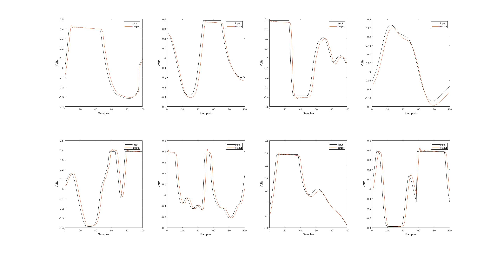
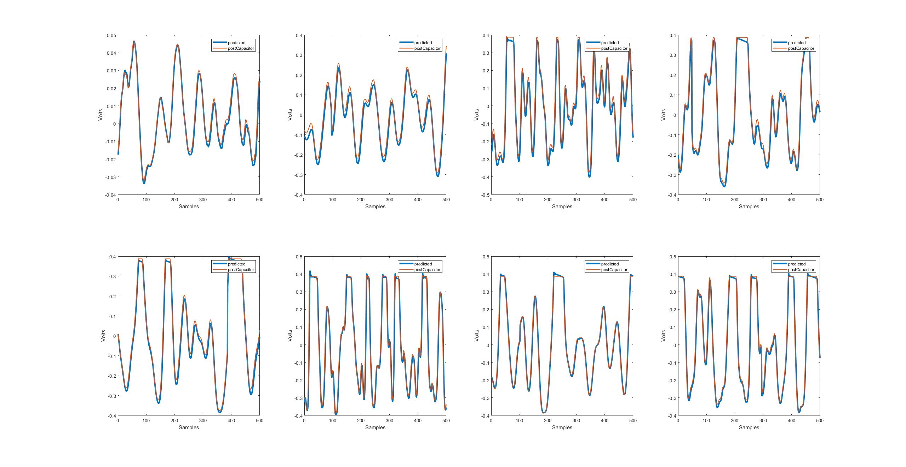
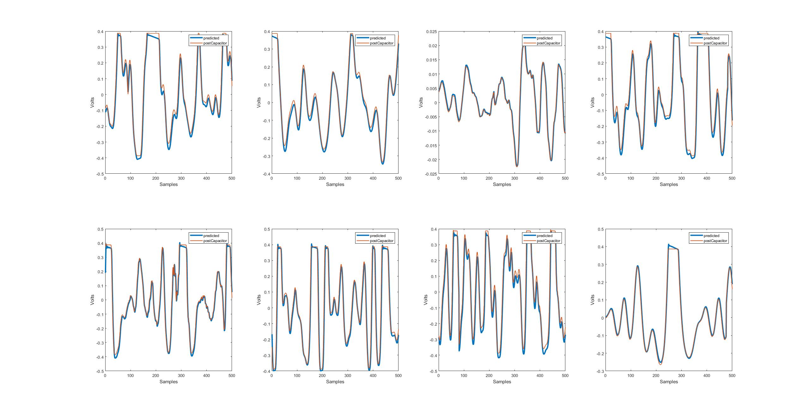

Here are the plot images and audio, the files with the same number are from the same excerpt in the audio.
This plot shows the nonlinearities, before and after the capacitor, of the recorded and prepared dataset. We have chosen to show only 100 samples in a plot for the viewer to be able to see the differences in the nonlinearities after the capacitor.
 This plot shows the predicted and target values of the machine learning. We chose to show 1000 samples so that the viewer is able to discern any and all differences.
| Sample | Predicted | Targeted |
|---|---|---|
| Audio Sample 1 | ||
| Audio Sample 2 |